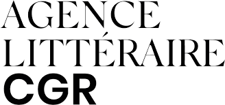
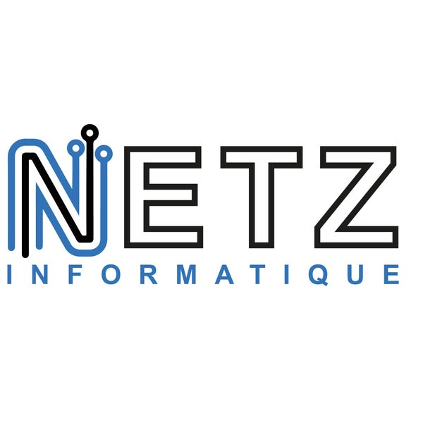

Lors de mon stage de première année de BTS s'étant déroulé de mai 2021 à juillet 2021 au sein
d'une agence litéraire étant située à Paris, j'ai dû le faire en télétravail suite à la crise sanaitaire se
déroulant à ce moment là.
Je n'étais pas seul, car j'avais un collègue de ma promotion ayant été recruté en même temps par
l'entreprise.
Notre but était de devoir faire une copie du site de l'agence, afin de pouvoir effectuer des modifications
et réparations sans affecter le site original.
Lors de ce projet, on a dû utiliser des outils tel que WordPress pour le frontend, Gatsby pour le backend
ainsi que son extension Gatsby Cloud pour l'hébergement en ligne, le plugin gatsby-source-wordpress pour
faire la liaison entre le front et le backend, et GitHub pour pouvoir travailler tous les deux à distance
sur le même projet.
On a dû coder certaines fonctionnalités nous-mêmes, et pour cela on a donc utilisé Visual Studio Code.
Au final, on a pu gagner de l'expérience dans la création de sites web via des outils spécialisés, bien
qu'il nous est impossible de pouvoir montrer le produit final.

Lors de mon second stage, je me suis rendu à un magasin se spécialisant dans la vente et
réparation d'équipement informatique, NETZ Informatique, se situant à Haguenau.
Suite au fait que le tuteur n'était pas consament présent au magasin, dû au fait que c'était un étudiant en
alternance, je devais alterner entre être à l'atelier à devoir aider avec l'équipement et leur site WEB de
vente de PC Gamers sous WordPress, et aider avec l'administration de l'entreprise,et à assister à la mise en place de formations pour la création d'un centre de formation dans le magasin.
Au final, j'ai pu gagner de l'expérience en dévellomement informatique (hardware et software) ainsi qu'en administration et formations.